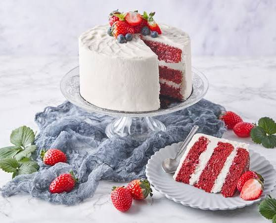

Especial
Red Velvet
Capas de color rojo y una delicada cobertura.
Una torta vistosa, elegida para mostrar cómo las imágenes y el diseño pueden destacar productos en una página web.
Precio ilustrativo30.000 Gs.
Este producto forma parte de una muestra académica y no está disponible para compra en este sitio.